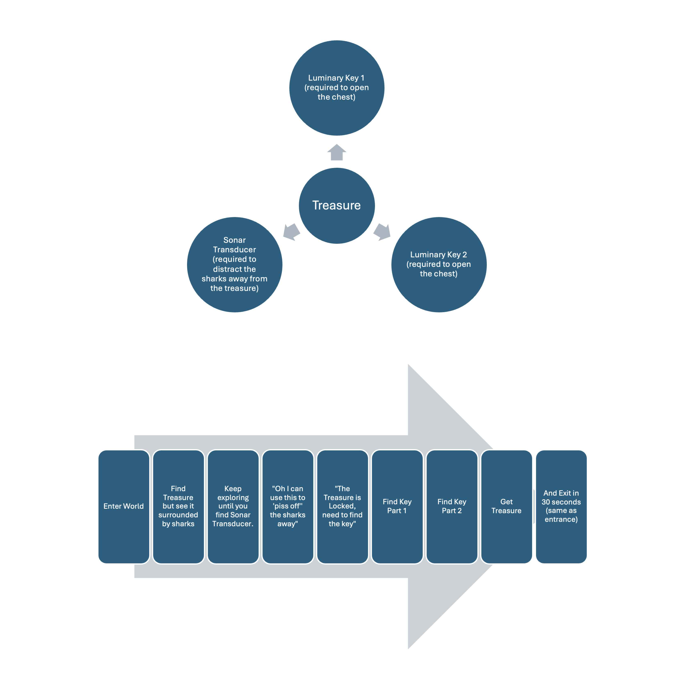
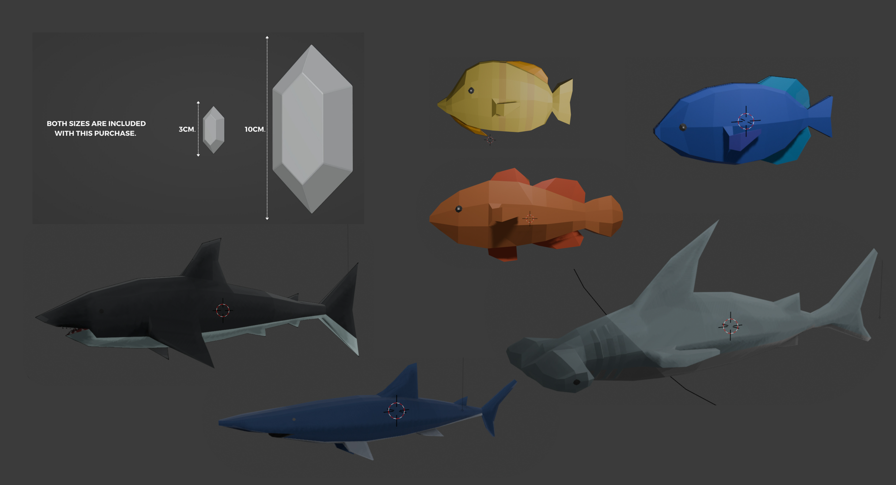

<!DOCTYPE html>
<html>
    <head>
        <meta charset="utf-8" />
        <meta name="viewport" content="width=device-width, initial-scale=1">
        <title>3D Game Design</title>
        <link rel="stylesheet" type="text/css" href="./css/styles.css">
        <link rel="preconnect" href="https://fonts.googleapis.com">
        <link rel="preconnect" href="https://fonts.googleapis.com">
        <link rel="preconnect" href="https://fonts.gstatic.com" crossorigin>
        <link href="https://fonts.googleapis.com/css2?family=Courier+Prime:ital,wght@0,400;0,700;1,400;1,700&family=Montserrat:ital,wght@0,100..900;1,100..900&display=swap" rel="stylesheet">
        <link rel="icon" type="image/png" href="dy_favicon.png">
    </head>
</html>
<body>
    <div class="mode-toggle">
        <button id="darkModeToggle">
            
        </button>
    </div>
    <header>
        <div class="language-selector">
            <a href="#" class="active">KR</a>
            <div class="lang-divider"></div>
            <a href="./en/sub_game_en.html">EN</a>
            <div class="lang-divider"></div>
            <a href="./cn/sub_game_cn.html">CN</a>
        </div>
    </header>
    <div class="sub-contents">
        <a href="index_kr.html">&lt; Back to Home</a>
        
        <div class="sub-contents-text">
            <div class="sub-text-title">Overview</div>
            <div class="sub-text-p">
                Sonar Escape는 시각적 및 청각적 신호를 활용하여 탐색과 탐험을 중심으로 한 해저 보물 찾기 게임입니다. 이 게임의 목표는 인도양의 깊은 바다를 탐험하며, 여정 중 필요한 도구들을 수집하고, 궁극적으로 Flor de la Mar의 잃어버린 보물을 발견하는 것입니다. 플레이어는 다양한 시각적 단서와 음향 신호를 통해 해저의 미지의 세계를 탐험하며, 깊은 바닷속에서 숨겨진 보물을 찾기 위한 여정을 떠나게 됩니다.
                <br/><br/>
                이 프로젝트는 University of Toronto의 컴퓨터공학과 및 음악과 학생들과의 협업으로, 한 학기 동안 약 3개월에 걸쳐 진행되었고 다양한 분야의 학생들이 함께 협력하여 창의적이고 독창적인 게임을 개발했으며, 저는 이 프로젝트에서 디자인 작업에 20%의 기여를 했습니다. 
                <br/><br/>
                구체적으로는 게임의 전반적인 컨셉 디자인을 담당하였으며, 사용자 경험을 고려한 로그인 화면 디자인과 함께, 게임 내 중요한 3D 오브젝트들을 디자인했습니다. 제가 디자인한 3D 오브젝트에는 플레이어가 게임 속에서 상호작용하게 될 물고기, 상어, 그리고 보석이 포함되어 있습니다. 이 프로젝트는 학문적 협력과 창의적 디자인이 결합된 성공적인 사례로, 다양한 분야의 지식과 기술이 어떻게 하나의 목표를 위해 통합될 수 있는지를 보여줍니다.
            </div>
        </div>
                
        
        
        
        
        <div class="sub-contents-text">
            <div class="sub-text-title">Link</div>
            <div class="sub-text-p">
                    <a href="https://dmkhara.itch.io/sonar-escape">https://dmkhara.itch.io/sonar-escape</a>
            </div>
        </div>
    <footer>
        <p>&copy; 2025 Dayeong Kim. All rights reserved.</p>
    </footer>

    <script src="./js/scripts.js"></script>
</body>